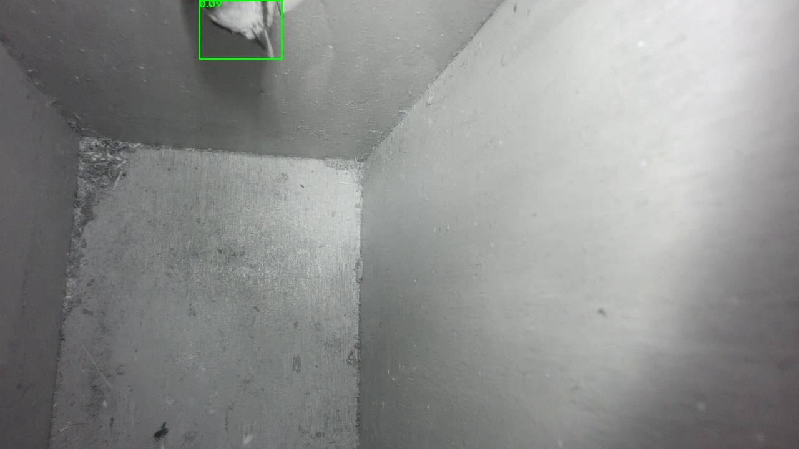

Detection
One small Python script watches the stream, notices movement, asks an object-detection model whether a bird is in the picture and reports to Home Assistant.
How it decides
- Motion. The picture is shrunk and blurred, compared to a slowly moving background, and counts as "motion" when about 1 % of the pixels change noticeably.
- Bird check. While there is motion, a YOLOv8n model (COCO class 14, "bird") looks about once a second at the whole picture and, separately, at the top 40 % of it, both at 1280 pixels. Frames smaller than 40 pixels are ignored (see What changed).
- Messages.
motionat most once per minute.occupiedafter three hits within 20 seconds.emptyafter 90 seconds without a hit. - Pictures. At most one picture every 3 seconds is saved, labelled
birdornobird, the last 1500 are kept.
Why motion counts as a hit
In a real box a bird is often visible only as a beak or head at the top edge of the picture, and a general-purpose model misses that much of the time. The camera sits inside the box, so movement there is almost always a bird. The script therefore counts either a model hit or motion (MODE = "both"). While the box is occupied, the model keeps checking every 5 seconds, so a bird sitting still keeps the status. The mode can be set to "model" or "motion" at the top of the script.
No usage data
Libraries like Ultralytics can send usage statistics. The script switches this off in code (settings.update({"sync": False})). It is also worth turning off once in the shell, including the optional integrations:
yolo settings sync=False clearml=False comet=False dvc=False mlflow=False raytune=FalseThe model file yolov8n.pt is downloaded once and then runs locally.
Installation
mkdir -p ~/nestbox ~/tmp
python3 -m venv ~/nestbox/venv
TMPDIR=~/tmp ~/nestbox/venv/bin/pip install --no-cache-dir ultralytics opencv-python-headless requestsUse opencv-python-headless, not opencv-python; the latter needs graphics libraries a headless Pi does not have. The TMPDIR trick is needed because /tmp is a small RAM disk on the Pi and large installs can fill it.
The script
Save as ~/nestbox/watch.py (download):
#!/usr/bin/env python3
"""Nest box watch: motion -> bird check -> message to Home Assistant."""
# SPDX-License-Identifier: MIT
# Copyright (c) 2026 snoth0x53
import os
import threading
import time
from datetime import datetime
from pathlib import Path
os.environ["OPENCV_FFMPEG_CAPTURE_OPTIONS"] = "rtsp_transport;tcp"
import cv2
import requests
from ultralytics import YOLO, settings
settings.update({"sync": False}) # never send usage data
# ---------- Settings ----------
RTSP = "rtsp://127.0.0.1:8554/nestbox"
HA_WEBHOOK = os.environ.get("HA_WEBHOOK", "") # e.g. http://<home-assistant>:8123/api/webhook/<secret-id>
MODE = "both" # what counts as a hit for "occupied": "model", "motion" or "both"
MOTION_FRAC = 0.01 # share of changed pixels that counts as motion
PIXEL_DIFF = 25 # brightness difference per pixel
BIRD_CONF = 0.13 # minimum confidence for "bird"
MIN_CONF = 0.05 # below this nothing is shown at all
CHECK_IMGSZ = 1280 # image size for the bird check (whole picture)
TOP_STRIP = 0.40 # top share of the picture that is also checked on its own (0 = off)
STRIP_IMGSZ = 1280 # image size for that top strip
MIN_BOX = 40 # ignore frames whose shorter side is below this many pixels (dust speck)
HITS_NEEDED = 3 # this many hits ...
HIT_WINDOW = 20 # ... within this many seconds = occupied
EMPTY_AFTER = 90 # seconds without a hit = empty
CHECK_EVERY = 1.0 # bird check while there is motion (seconds)
CHECK_EVERY_OCC = 5.0 # bird check while occupied (a bird may sit still)
MOTION_NOTIFY_EVERY = 60 # seconds between two motion messages
SNAP_EVERY = 3 # seconds between two saved pictures
SNAP_DIR = Path.home() / "nestbox" / "snaps"
MAX_SNAPS = 1500
BIRD_CLASS = 14 # COCO: "bird"
# ------------------------------
latest = {"frame": None, "ok": False}
def log(msg):
print(f"{datetime.now():%H:%M:%S} {msg}", flush=True)
def reader():
"""Reads the stream continuously and keeps only the newest frame."""
while True:
cap = cv2.VideoCapture(RTSP, cv2.CAP_FFMPEG)
if not cap.isOpened():
log("Stream not reachable, retrying in 5 s")
time.sleep(5)
continue
log("Stream connected")
while True:
ok, frame = cap.read()
if not ok:
break
latest["frame"] = frame
latest["ok"] = True
cap.release()
latest["ok"] = False
log("Stream lost, reconnecting")
time.sleep(2)
def notify(state):
log(f"=== Nest box: {state.upper()} ===")
if HA_WEBHOOK:
try:
requests.post(HA_WEBHOOK, json={"state": state, "time": datetime.now().isoformat()}, timeout=5)
except Exception as e:
log(f"Home Assistant not reachable: {e}")
def save_snap(frame, label, boxes=None):
SNAP_DIR.mkdir(parents=True, exist_ok=True)
img = frame.copy()
for (x1, y1, x2, y2, c) in boxes or []:
cv2.rectangle(img, (int(x1), int(y1)), (int(x2), int(y2)), (0, 255, 0), 2)
cv2.putText(img, f"{c:.2f}", (int(x1), max(int(y1) - 5, 12)), cv2.FONT_HERSHEY_SIMPLEX, 0.6, (0, 255, 0), 2)
cv2.imwrite(str(SNAP_DIR / f"{datetime.now():%Y%m%d-%H%M%S}-{label}.jpg"), img)
files = sorted(SNAP_DIR.glob("*.jpg"))
for old in files[:-MAX_SNAPS]:
old.unlink()
def main():
threading.Thread(target=reader, daemon=True).start()
log("Loading bird model ...")
model = YOLO("yolov8n.pt")
log(f"Mode: {MODE}")
def detect(img, imgsz):
res = model(img, imgsz=imgsz, conf=MIN_CONF, classes=[BIRD_CLASS], verbose=False)[0]
boxes = [(*b.xyxy[0].tolist(), float(b.conf[0])) for b in res.boxes]
return [b for b in boxes if min(b[2] - b[0], b[3] - b[1]) >= MIN_BOX]
def find_birds(frame):
boxes = detect(frame, CHECK_IMGSZ)
if TOP_STRIP > 0:
h = frame.shape[0]
boxes += detect(frame[: int(h * TOP_STRIP)], STRIP_IMGSZ)
return boxes
bg = None
warmup = 30
occupied = False
hits = []
last_hit = 0.0
last_check = 0.0
last_snap = 0.0
last_motion_msg = 0.0
last_seen = None
while True:
time.sleep(0.07)
frame = latest["frame"]
if frame is None or frame is last_seen:
continue
last_seen = frame
small = cv2.GaussianBlur(cv2.cvtColor(cv2.resize(frame, (320, 180)), cv2.COLOR_BGR2GRAY), (9, 9), 0)
if bg is None:
bg = small.astype("float")
continue
diff = cv2.absdiff(small, cv2.convertScaleAbs(bg))
motion = (diff > PIXEL_DIFF).mean() > MOTION_FRAC
cv2.accumulateWeighted(small, bg, 0.05)
if warmup > 0:
warmup -= 1
continue
now = time.time()
if motion and now - last_motion_msg > MOTION_NOTIFY_EVERY:
last_motion_msg = now
notify("motion")
interval = CHECK_EVERY_OCC if occupied else CHECK_EVERY
if (motion or occupied) and now - last_check >= interval:
last_check = now
boxes = find_birds(frame)
birds = [b for b in boxes if b[4] >= BIRD_CONF]
best = max((b[4] for b in boxes), default=0.0)
if birds:
log(f"Bird detected (confidence {best:.2f})")
if now - last_snap >= SNAP_EVERY:
save_snap(frame, "bird", birds)
last_snap = now
elif motion:
log(f"Motion, but no bird detected (best score {best:.2f})")
if now - last_snap >= SNAP_EVERY:
save_snap(frame, "nobird", boxes)
last_snap = now
hit = (bool(birds) and MODE in ("model", "both")) or (motion and MODE in ("motion", "both"))
if hit:
hits.append(now)
last_hit = now
hits = [t for t in hits if now - t <= HIT_WINDOW]
if not occupied and len(hits) >= HITS_NEEDED:
occupied = True
notify("occupied")
if occupied and now - last_hit > EMPTY_AFTER:
occupied = False
hits = []
notify("empty")
if __name__ == "__main__":
main()
Run it as a service
A systemd unit keeps it running after a reboot. The webhook address is kept in a separate drop-in file, so it never ends up in the script:
# /etc/systemd/system/nestbox-watch.service
[Unit]
Description=Nest box watch
After=network-online.target mediamtx.service
[Service]
User=<your-user>
ExecStart=/home/<your-user>/nestbox/venv/bin/python /home/<your-user>/nestbox/watch.py
Restart=always
RestartSec=5
[Install]
WantedBy=multi-user.target
# /etc/systemd/system/nestbox-watch.service.d/ha.conf
[Service]
Environment=HA_WEBHOOK=http://<home-assistant>:8123/api/webhook/<secret-id>sudo systemctl daemon-reload
sudo systemctl enable --now nestbox-watch
journalctl -u nestbox-watch -b --no-pager | tail -n 20Reading the log
journalctl -u nestbox-watch --since today --no-pager | grep -E "MOTION|Bird detected|OCCUPIED|EMPTY"The script only logs when something happens, so "no entries" means "quiet", not "dead". Use systemctl is-active nestbox-watch to check the service itself. If the Pi's clock lags after boot, use -b (this boot) instead of --since today.

nobird although a tit is clearly there. The alert came from the motion check.What changed since the first version
The script on this page is the current one. These are the changes since the first version, in the order they happened, and why.
12 to 19 October: the first version
The whole picture was checked at 640 pixels, and a score of 0.15 or more counted as a bird. In practice the model saw almost nothing: a tit that shows only its head and beak at the top edge scored between 0.00 and 0.09. The alerts all came from the motion check, and all pictures were saved as nobird.
22 October: a sharper look
I tested several variants on 24 saved pictures: the whole picture at 640 and at 1280 pixels, the top strip alone at 960 and 1280 pixels, and the same with more contrast. The old 640 check found a bird in none of the 22 pictures that were not marked as false alarms. The whole picture at 1280 pixels found 12 and the top strip at 1280 pixels found 7, at a threshold of 0.08. More contrast did not help. The script then used both 1280 checks and a threshold of 0.13. The price is about four times the computation per check, which the Pi 5 handles without a change in temperature so far.
26 October: the dust speck
On 26 October the sun shone through the entrance hole, the motion check fired, and the box was reported as occupied for about four minutes with nobody inside. The reason was a small dark speck on the right wall, about 20 pixels wide, which the sharper check took for a bird (scores 0.13 to 0.18). My first test had not shown this, because it only looked at the highest score per picture and could not tell a bird from a speck. A tit in this picture is about 100 pixels or more across, so the script now ignores detections whose shorter side is below 40 pixels. Raising the threshold instead would have been worse: the speck reached 0.18, a faint real bird only 0.13. A second test on 45 pictures, with this filter, gave: old 640 check 1 of 30, whole picture at 1280 pixels 5 of 30, top strip at 1280 pixels 8 of 30, and no false alarm among 15 pictures without a bird. The pictures are on the Visits page.
What is still open
The tests ran on saved pictures, and on those the green frames are already painted in, which changes the scores. They tend to underestimate the live scores. There are also only about 15 pictures without a bird, mostly from the same scene. Shadows, leaves or other reflections at the entrance have not been tested. I will keep watching the log and change the script when something new turns up.